For this setup I'm using Duplicati to backup to Backblaze. In a previous post I've written some instructions on setting up Backblaze.
Install
First head on over to Duplicati and download the latest version for Windows (at the time of this writing that's 2.0.2.1)
Start the installer
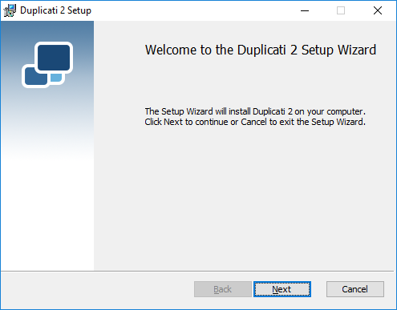
Accept the GPL License
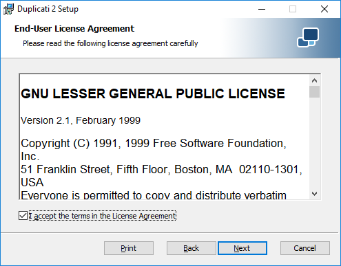
Accept the default setup
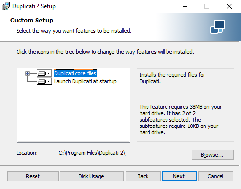
Click on Install
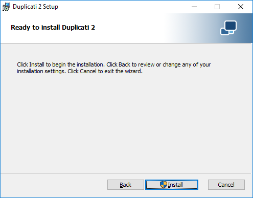
Hit Finish to launch Duplicati
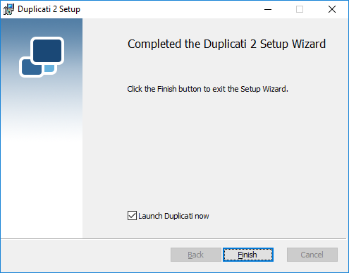
Launch
Duplicati should automatically launch in your default web browser after installing. If it doesn't, simply open your web browser and go to http://localhost:8200/ngax/index.html
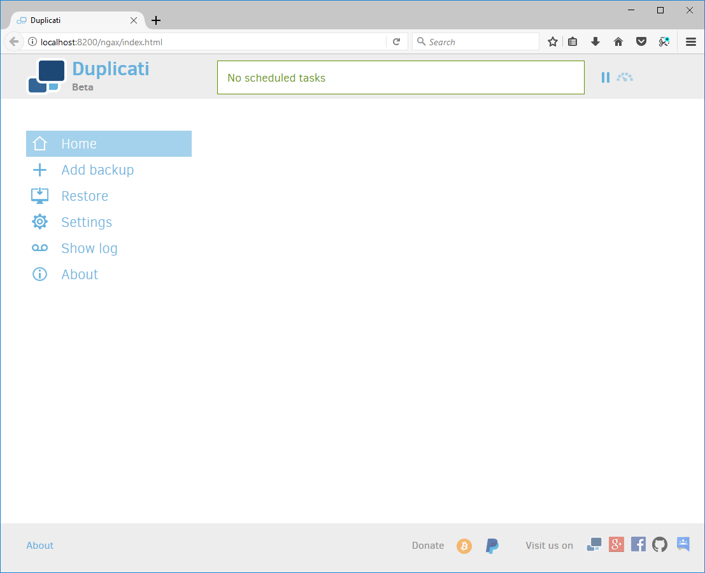
Setup backups
Click on Add Backup > Configure a new backup > Next
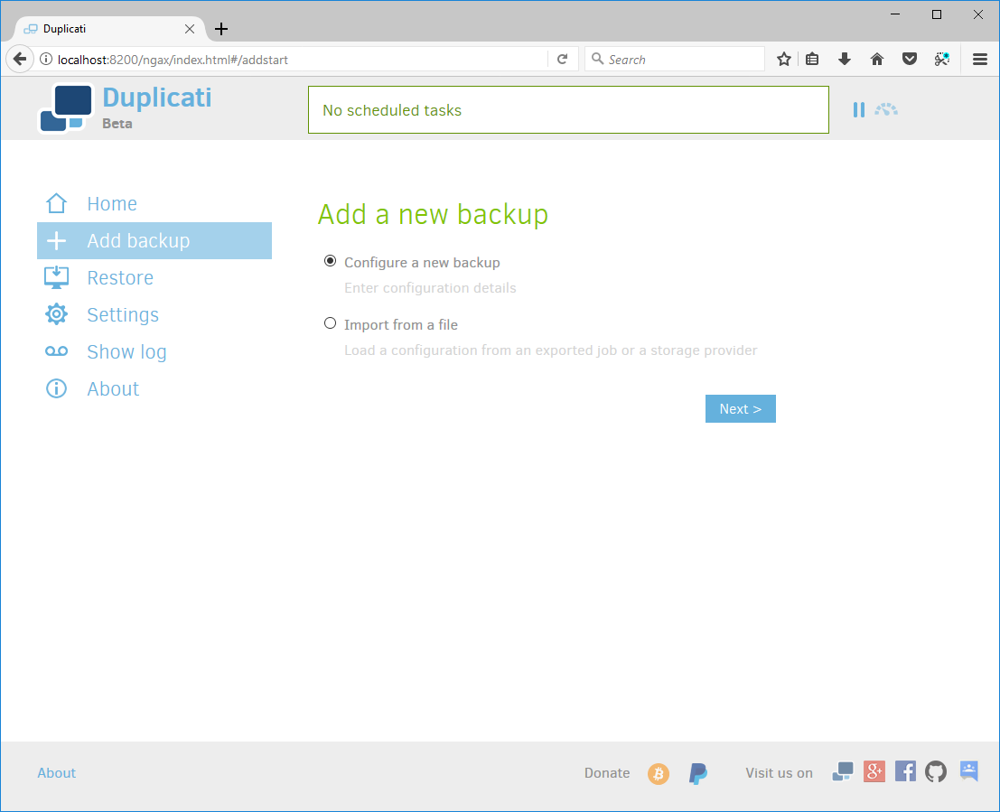
Give your backups a name, you don't need to use encryption but I'd highly recommend it, and I'd also recommend using their password generator and saving the password in a password manager.
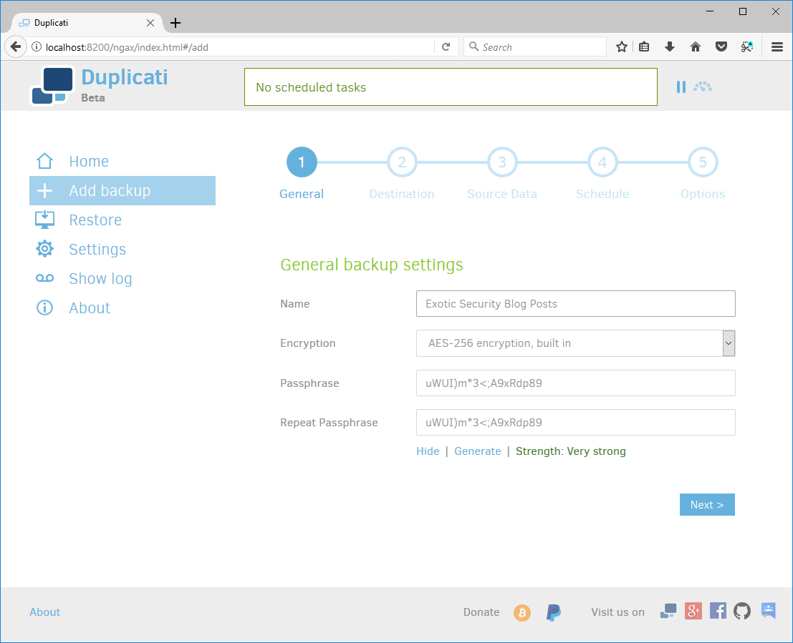
Pick B2 Cloud Storage, put in your Bucket Name, a folder path, your account ID and your application key (from the instructions on setting up Backblaze). It's also a good idea to test your connection before continuing.
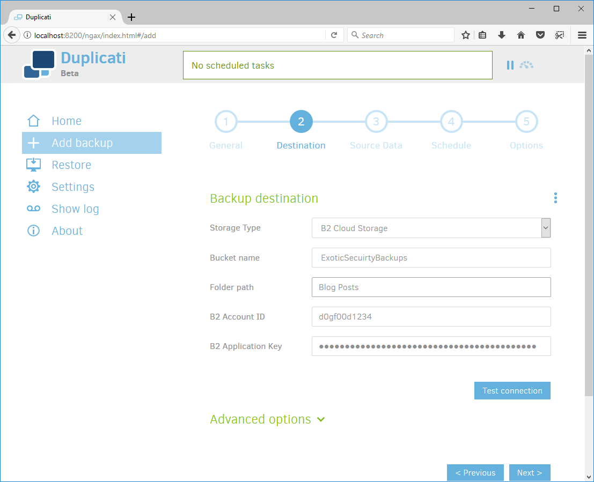
Select your source data
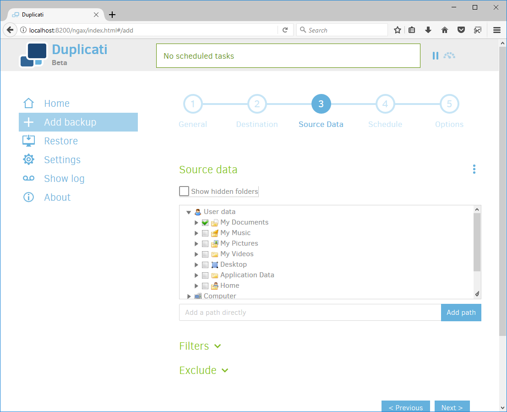
Setup a schedule that works for you, the default on of once a day is pretty reasonable for most personal backups.
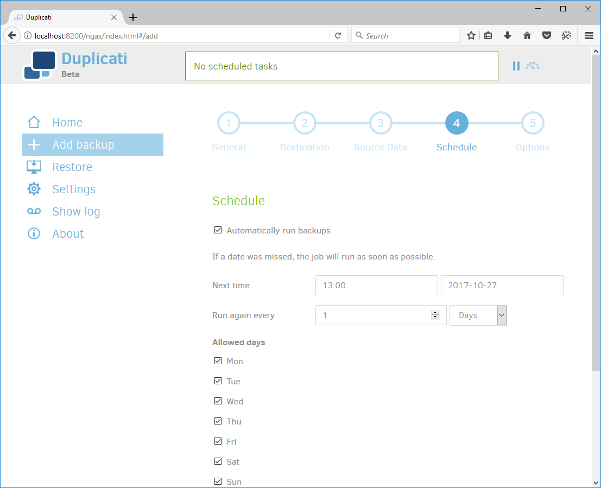
Unless you have a reason to change them I'd leave the default options.
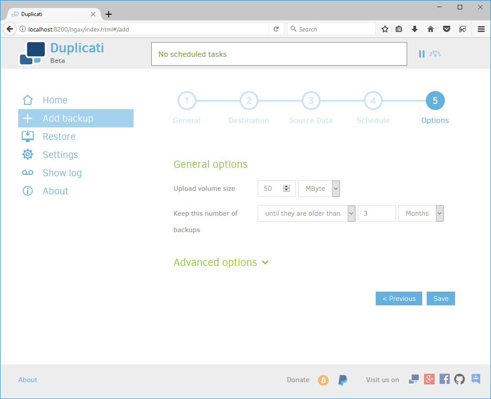
And your done, you can hit Run now to start the backups or just wait for the schedule to kick in.
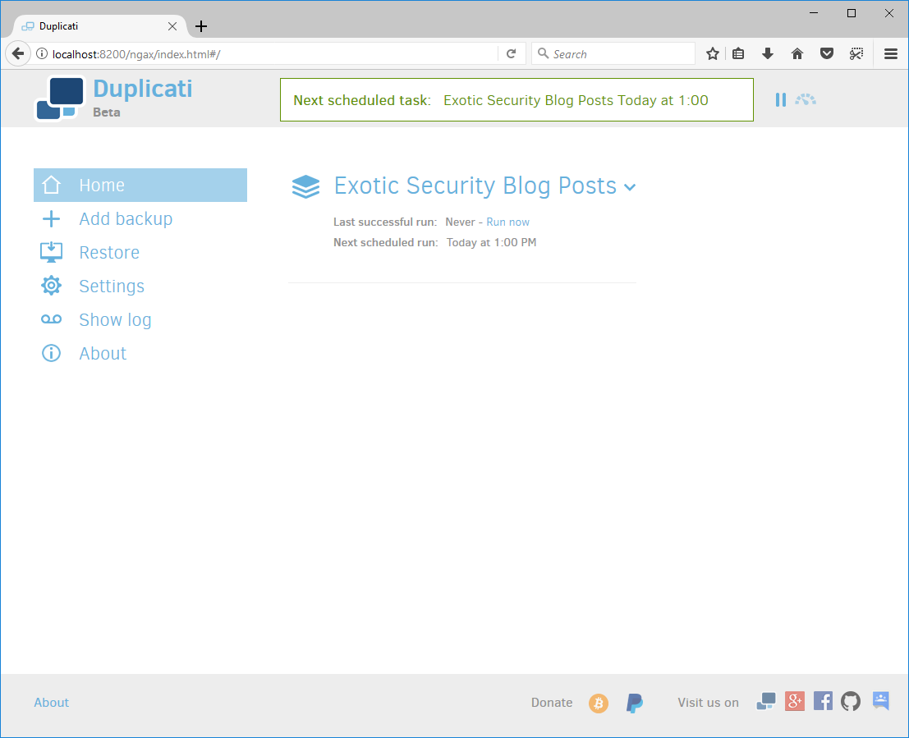
It's that easy.
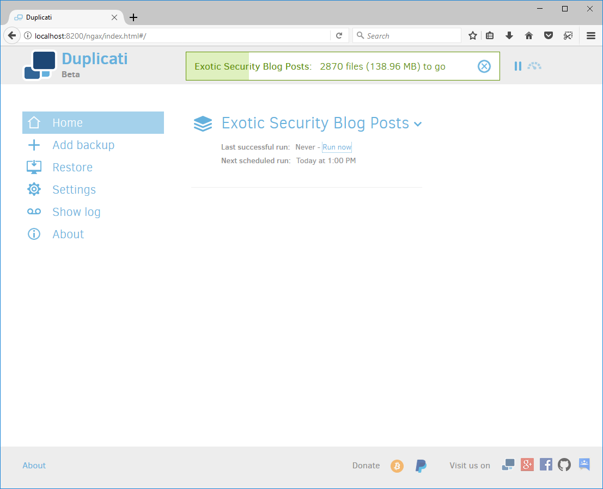